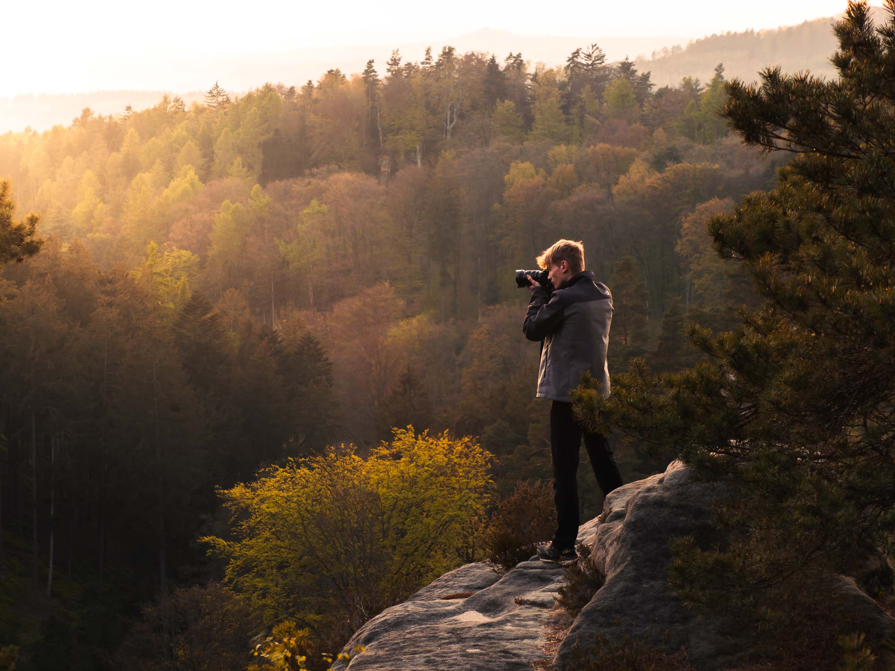
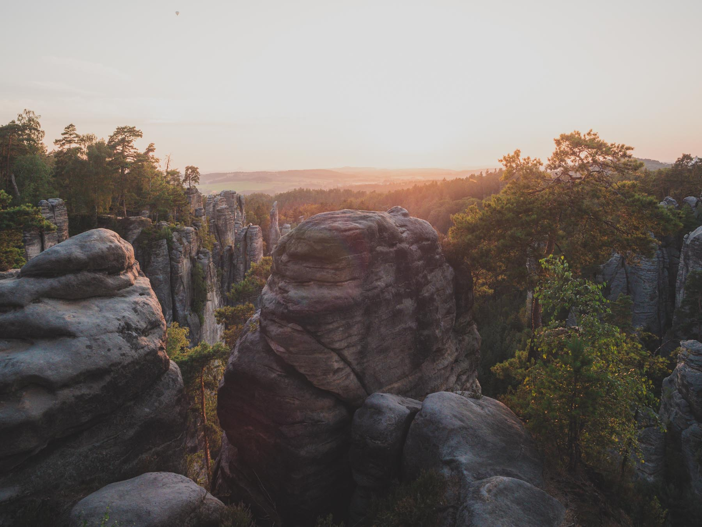
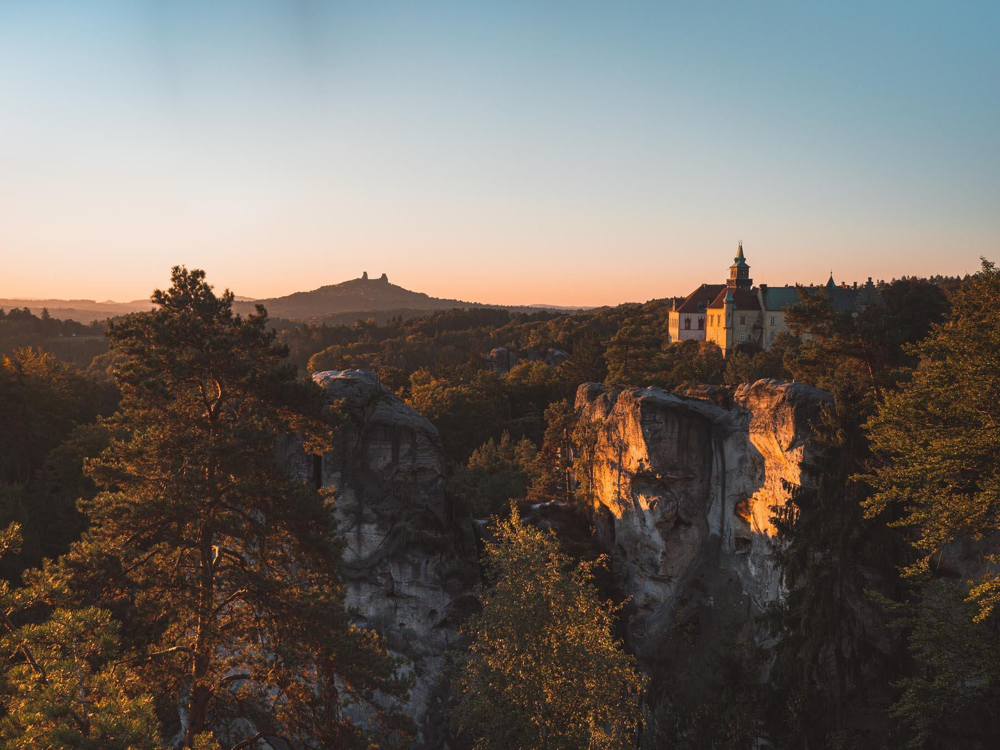
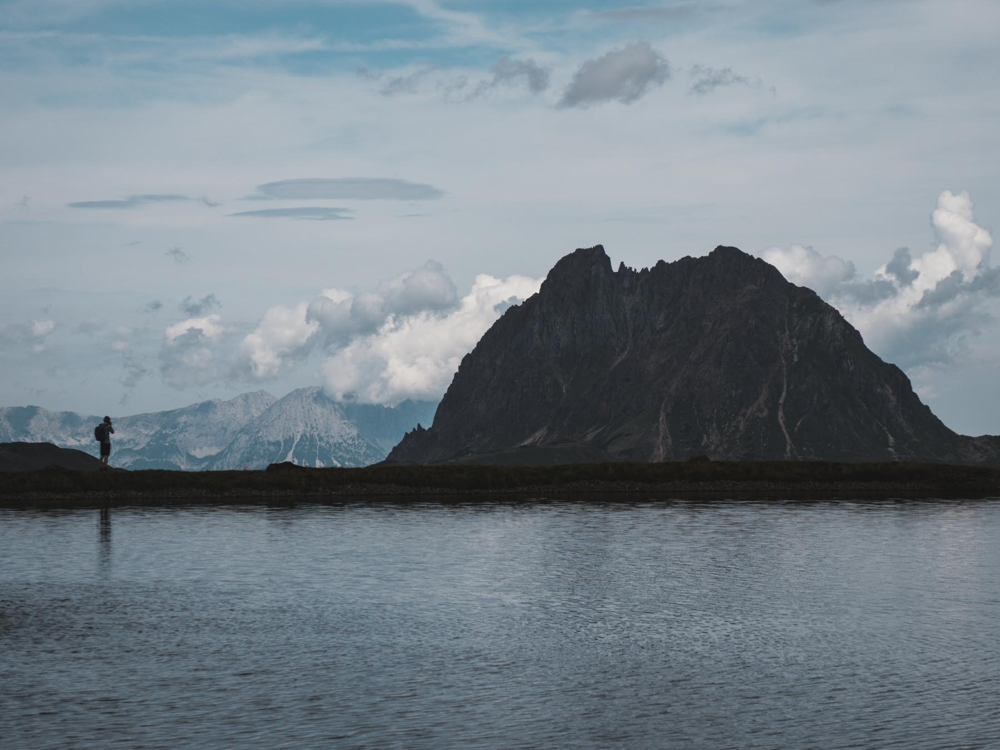
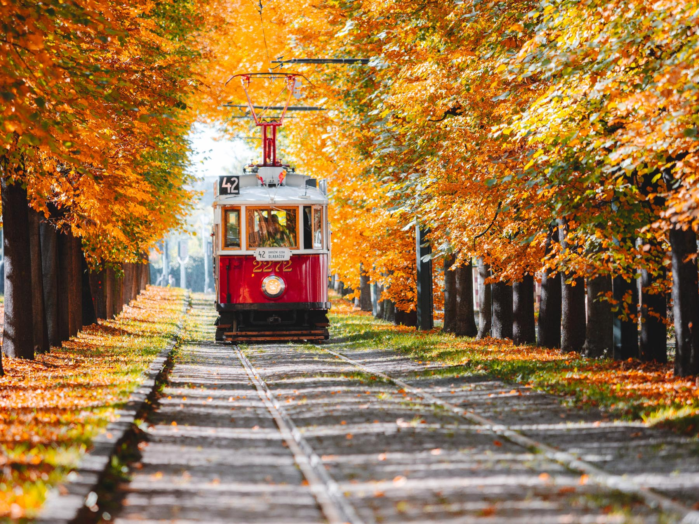
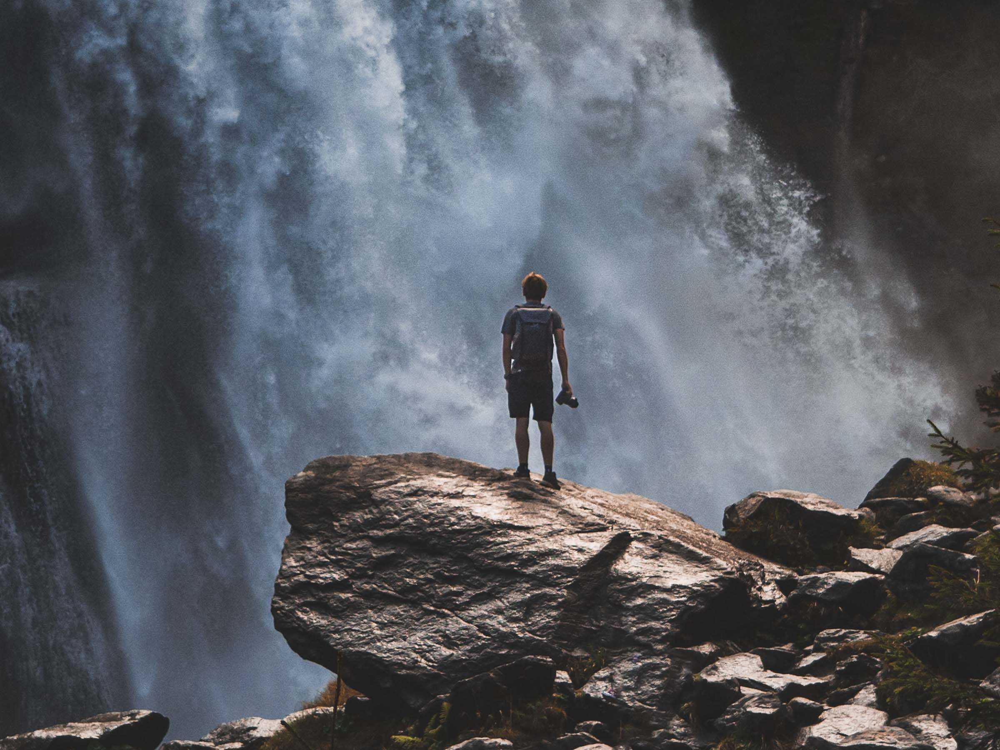

PŘEDSTAVENÍ01
PETR FIDRMUC
PHOTOGRAPHER
Jmenuji se Petr Fidrmuc. Bydlím na okraji Českého ráje.
Focení se věnuji intenzivněji od roku 2018. Využívám techniku od Olympusu a příslušenství od Peak Design.

PŘEDSTAVENÍ01
Jmenuji se Petr Fidrmuc. Bydlím na okraji Českého ráje.
Focení se věnuji intenzivněji od roku 2018. Využívám techniku od Olympusu a příslušenství od Peak Design.

MÁ TVORBA02




Mojí největší zálibou je fotografování krajiny. Především ráno, když vychází slunce a svět okolo má ty nejhezčí barvy.
Mojím dalším koníčkem je astrofotografie. Přijde mi velmi fascinující, že i s relativně levnou technikou lze pořizovat snímky něčeho tak vzdáleného jako jsou mlhoviny nebo galaxie.
JAKOU TECHNIKU VYUŽÍVÁM03
Již při představení fotoaparátu OM System OM-5 jsem doufal, že si ho jednou budu moci koupit. Nyní, asi o půl roku později jsem konečně ušetřil dost peněz a tento skvělý fotoaparát si pořídil.
Aktuálně s sebou vždy v batohu nosím jen dva objektivy, se kterými si troufám říci, že nafotím téměř vše. Jedním z nich je Leica DG vario 10-25mm f/1.7 a druhým je teleobjektiv Olympus 40-150mm f/2.8 PRO, který využívám především na astrografii.
